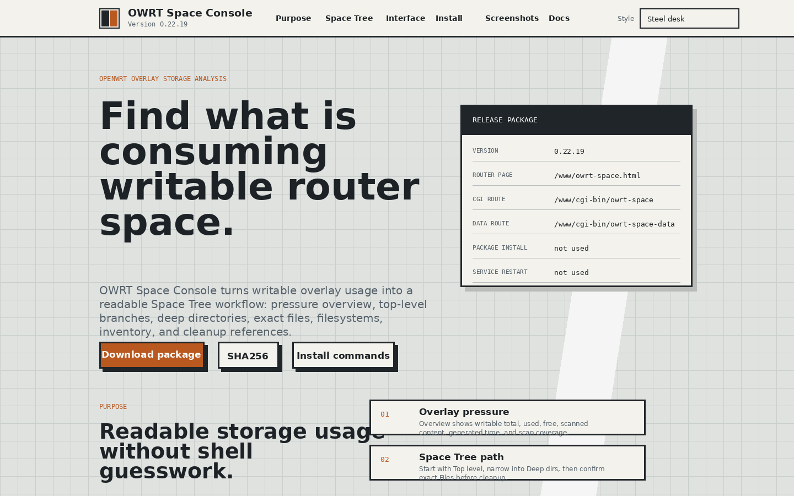
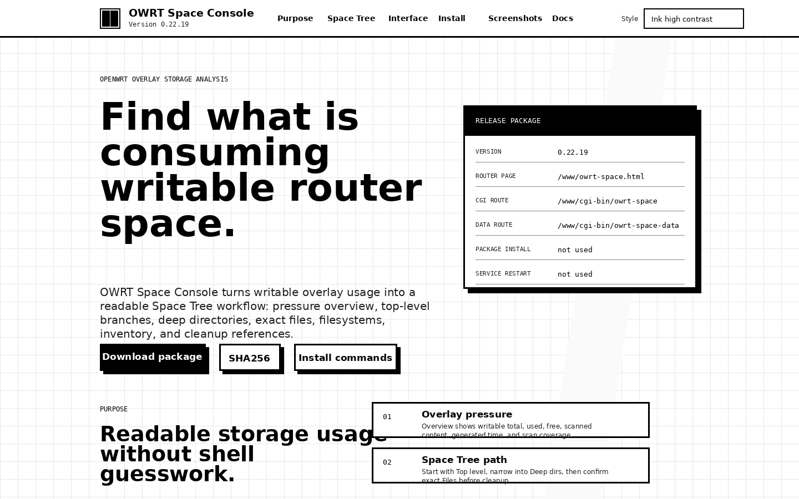
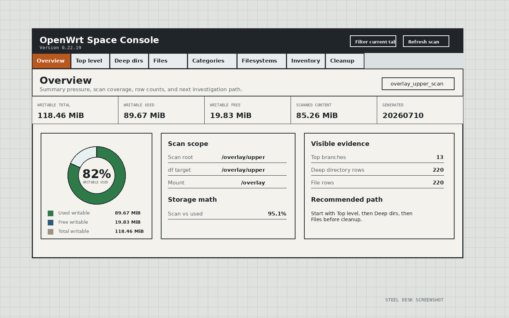
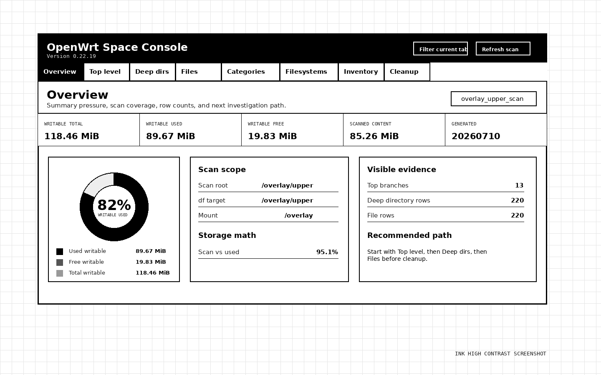
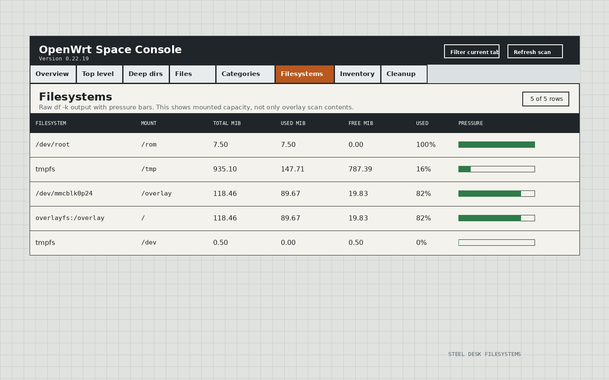
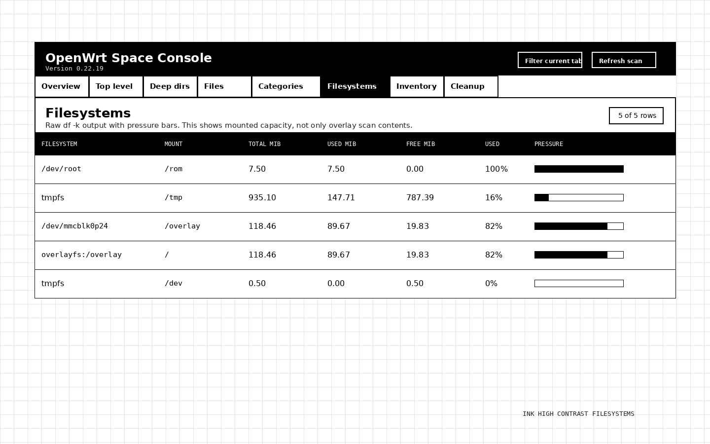

Overlay pressure
Overview shows writable total, used, free, scanned content, generated time, and scan coverage.
OpenWrt overlay storage analysis
A tabbed Space Tree workbench for overlay pressure, top-level branches, deep directories, exact files, categories, filesystems, inventory, and cleanup references.
Purpose
The router page separates summary pressure from file and directory evidence. The goal is to show what consumes writable overlay space before cleanup.
Overview shows writable total, used, free, scanned content, generated time, and scan coverage.
Start with Top level, narrow into Deep dirs, then confirm exact Files before cleanup.
Cleanup commands are inspection-first examples. They do not run from the web page.
Space Tree workflow
Summary cards remain scoped to the Overview tab. Storage records live in sortable table tabs so the operator can compare names, full paths, sizes, shares, and pressure bars.
| Rank | Name | Full path | MiB | Share | Bar |
|---|---|---|---|---|---|
| 1 | usr | /overlay/upper/usr | 53.53 | 62.8% | |
| 2 | tmp | /overlay/upper/tmp | 20.79 | 24.4% | |
| 3 | www | /overlay/upper/www | 6.69 | 7.9% |
Install
The package is designed for OpenWrt /www deployment. It does not install packages, restart services, or create router archives.
sh install_owrt_space_console_0_22_19_FULL_REPLACE_APP.shhttps://192.168.50.1/owrt-space.htmlhttps://192.168.50.1/cgi-bin/owrt-space?refresh=1Screenshots






Docs
Documentation files are included for install behavior, storage workflow, theme rules, license, and release checks.